1. End-to-end overview
The registry governs the deployed capability snapshot; DeerFlow owns planning, tool iteration, memory, and thread state. A later Create a skill action closes the loop through reviewed publication.


2. Registry, activation, deployment, and rollback
Registration checks immutable identity and content. Activation checks exact dependency pins, team scope, cycles, and name conflicts. The adapter builds native configuration; deployment applies the selected snapshot.


3. Prompt routing, clarification, and agent execution
A telecom prompt is handled through bounded discovery and the existing agent loop. Registry admission occurs before the model and before tool dispatch. Discovery helps the model choose a capability; it does not grant execution permission.


4. Create a skill: evidence to immutable release
Users capture a terminal run, explicitly write a reusable parameterized recipe, validate it, and obtain an independent exact-digest review. Edits invalidate validation and review. Publication creates an immutable revision.


5. Bounded retries, circuit breakers, and partial results
The configured async policy admits a call through shared circuit state. Only transient failures on explicitly idempotent operations can retry. Failures yield safe receipts and durable escalation events; cancellation and permanent errors propagate.


6. Approved remote sandbox lifecycle and enforcement
The adapter checks the approved endpoint, owner, expiry, exact policy receipt, paths, and transfer limits. The company broker enforces OS isolation and process deadlines. Failed deletion fences the lease, including previously retained handles.


Source and maintenance
The Mermaid source and implementation map explain each flow and link to the code. The services guide owns setup, policy defaults, and API contracts. Regenerate SVGs with render_enterprise_flow.mjs after editing the source.
These diagrams describe the implemented foundation. Company BQ validation, Typesense indexing, and approved remote broker enforcement require their own integrations. Qualify host-specific adapter interfaces when syncing upstream.